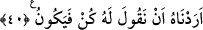

BİZE DÜŞEN
ANCAK TEBLİĞ
35. Ortak koşanlar dediler ki: “Allah dileseydi ne biz ne de babalarımız ondan
başkasına tapardık. Onun emri olmadan hiçbir şeyi de haram kılmazdık.” Onlardan
öncekiler de böyle yapmışlardı. Peygamberlerin üzerine açık seçik tebliğden başka
bir şey düşer mi!
36. Andolsun ki biz, “Allah’a kulluk edin ve tâğuttan sakının” diye (emretmeleri
için) her ümmete bir peygamber gönderdik. Allah, onlardan bir kısmını doğru yola
iletti. Onlardan bir kısmı da sapıklığı hak ettiler. Yeryüzünde gezin de görün, inkâr
edenlerin sonu nasıl olmuştur!
37. (Rasûlüm!) Sen, onların hidâyete ermelerine çok düşkünlük göstersen de bil
ki Allah, saptırdığı kimseyi (dilemezse) hidâyete erdirmez. Onların yardımcıları da
yoktur.
38. Onlar: “Allah ölen bir kimseyi diriltmez” diye olanca güçleriyle Allah’a and
içtiler. Aksine, bu O’nun bizzat kendisine karşı gerçek bir vaadidir. Fakat
insanların çoğu bilmez.
39. Hakkında ihtilaf ettikleri şeyi onlara açıklaması ve kâfir olanların da
kendilerinin yalancılar olduklarını bilmeleri için (Allah onları diriltecek).